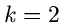
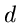
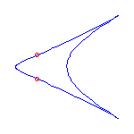
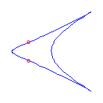
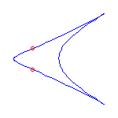

Topological Restrictions for 
A rational curve of degree  in with
cusps has
nodes.
Types of nodes:
Real node
Isolated point
Conjugate pair
Theorem.
(Kharlamov-S.)
Real nodes
Proof uses Plücker and Klein formulae.



 
